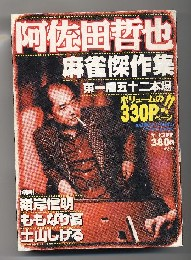

阿佐田哲也の麻雀小説は、どれもこれも傑作揃い。どの作品も好きだ。しかし「東の１局五十二本場」は、読んだときシビれた。短編小説でシビれさすなんて、ホントにすごい。
＊ストーリーは、麻雀ファンなら誰でも知っていると思うので、あらためて紹介しない。
それも考えてみれば、「流局ノーテンでも親流れしない」という、ありがちなルールがテーマ。そんな単純なテーマで、これほどシビれさす小説をモノにするなんて、まさに雀聖の名前にふさわしい力量だ。
仮にσ(-_-)が同じ事を思いついて、同じ様なストーリーをモノにしても、こんなに面白くは書けない。登場人物の心理描写、キャラクターの存在感、状況の緊迫感、こういう部分の描写が天地ほど違うからだ(って、当たり前のことを云うなよ....自分)
で、ようやく本題にはいると、麻雀放浪記をはじめ、阿佐田哲也の麻雀小説は数多くが漫画化されている。しかしすべてが成功しているとは言えない。中には（おひ、原作をこんなにぶちこわして....）と、思わず頭を抱えるようなコミックもある。そこで始めてこのコミックを手に取ったときも、対して期待していなかった。

ところが読んでみて、ストーリーが原作に忠実であることや、原作の緊迫感、キャラクターの存在感、心理描写などが見事に移植されていたことに感心した。それだけではない。コミックならではのコマ割りだって見事の一言。
麻雀漫画家はたくさんいる。嶺岸信明という漫画家もその１人といっていい。しかしそれまでさほど関心はなかった。たくさんも麻雀コミックを描いているのはもちろん知っていたが、σ(-_-)の頭の中では、漠然と「その他大勢」という感覚だった。しかしこの作品を見て、「いやぁ、失礼いたしました」と思わず最敬礼した。
この作品１本で、σ(-_-)の頭の中の嶺岸信明像は、北野英明クラスのＡ級へと変化した次第。
|